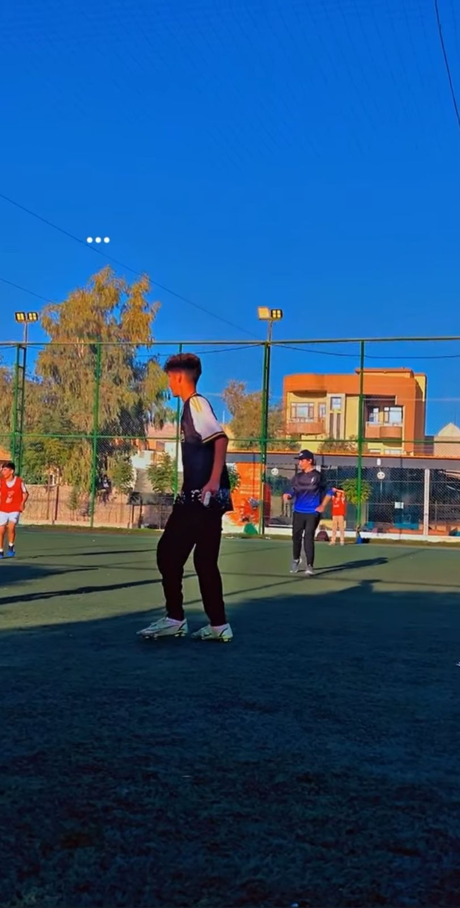
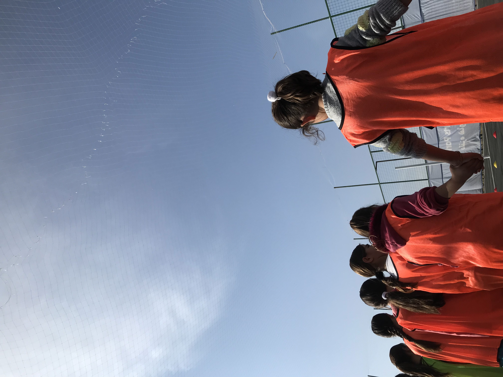
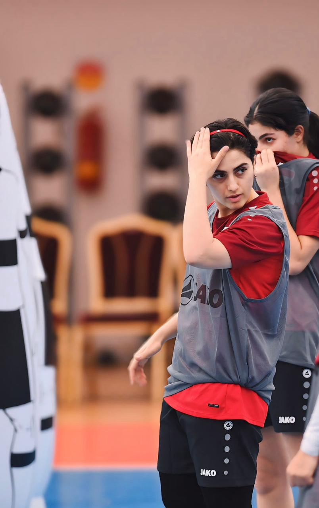
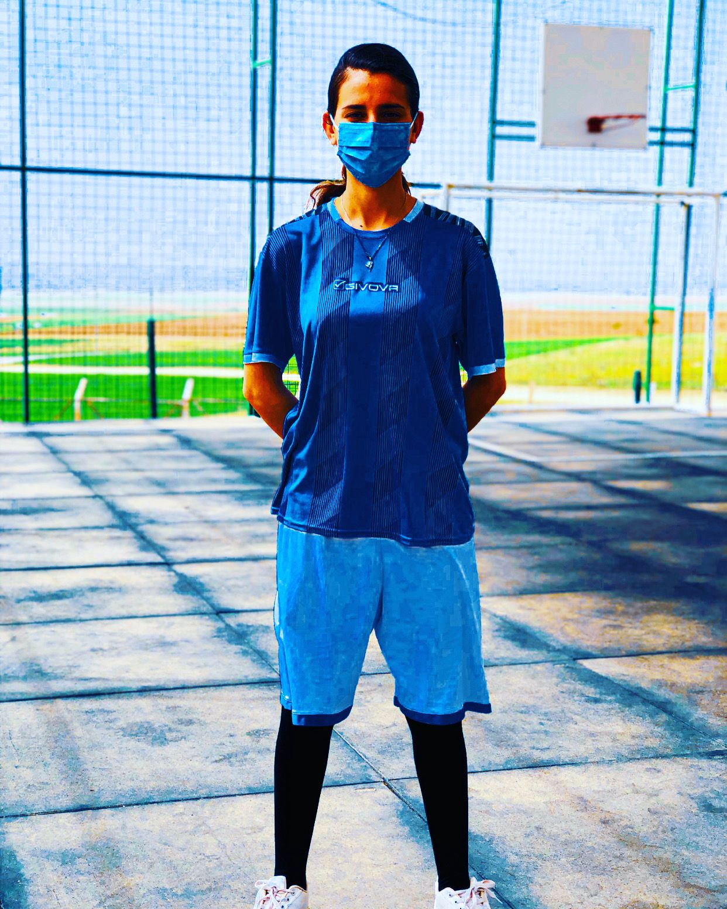

Using data to understand how sport builds resilience in crisis contexts
270+
Participants Surveyed
93.5%
Community Support
2x
Higher Wellbeing Scores
The Challenge
In Zakho, Iraq, thousands of displaced families live in camps and informal settlements. Adolescent girls have lost their homes, schools, and sense of normalcy. Mental health support is limited, and community cohesion is fractured.
Mental Health Crisis
Non-participants scored in the clinical concern range for depression (WHO-5: 41/100)
Social Isolation
Displaced girls report low social support and limited opportunities for connection
Community Fragmentation
Displacement disrupts collective identity and shared purpose
What The Data Shows
Program Participants Show Dramatically Higher Wellbeing
WHO-5 Wellbeing: 82/100 (participants) vs 41/100 (non-participants)
Social Support: 4.3/5 vs 2.0/5
Self-Confidence: 4.2/5 vs 2.1/5
Effect sizes: d = 4.6 to 5.9 (exceptionally large)
Football Unites the Community
93.5% voted to support Zakho FC in FIFA recognition
No differences by gender, residence status, or displacement history
High pride when the team plays (4.5/5 across all demographics)
Football emerged as a rare unifying force in a fractured community
Our Methodology
This isn't just descriptive statistics - we built this to publication standards.
📊
Two-Study Design
Study 1: 102 adolescent girls (79 participants, 23 non-participants)
Study 2: 168 community members across demographics
✓
Validated Measures
WHO-5 Wellbeing Index, social support scales, custom sentiment measures
All code available, random seeds set, dependencies documented
Complete statistical appendix with assumption tests
Limitations (Because Honesty Matters)
Cross-sectional design: Can't prove causality - maybe participating improves wellbeing, or maybe girls with better wellbeing are more likely to participate
Voices and faces from Displacement Camps in the Kurdistan Region

Coach Berivan
Training in action
Building skills together
Training in winter - nothing stops us

Hope
Stories From The Community

Coach's Perspective
"When these girls first came, many wouldn't even make eye contact. They'd lost everything - their homes, their friends, their routines. Football gave them something to look forward to. Now I see them laughing, supporting each other, taking leadership roles. It's not just about the sport. It's about rebuilding their sense of who they are."
- Sipal Shukur, Athlete & Football Coach

From Player to Coach: Berivan's Journey
"Since I was little, I've always wanted to be a football player. When I play, I feel like I'm flying - I love it beyond words. I started playing with friends at school. Then came displacement. In 2014, we found ourselves in camps, but we didn't stop - we played in the streets despite everything. When sport initiatives were launched to support girls, I seized the opportunity and took football courses. Today, I've gone from player to coach at Amal Academy in Sharya. I train both boys and girls, ages 10-18, for free. Watching them grow and improve? That's my greatest reward. Now I dream bigger - to provide more training programs. We're waiting for support to turn this dream into reality. Every girl deserves the chance to fly."
- Berivan Sabri Elias, Age 22, Football Coach
Finding Confidence
"Before the program, I stayed inside most of the time. I didn't think I could do sports. Now I'm team captain. My family is proud of me."
— Participant, Age 16
Making Friends
"In the camp, everyone is from somewhere else. Football brought us together. Now my best friends are from three different villiges."
— Participant, Age 14
The Unexpected Goalkeeper
"I showed up because my sister dragged me. I thought I'd just sit and watch. Then the coach asked me to try goalkeeper - me! The girl who drops everything! But something clicked. I saved my first penalty and everyone went crazy. Now they call me 'The Wall' and I love it."
— Participant, Age 15
Generate Impact Pitch
Select a stakeholder to instantly draft a data-backed pitch using the study's findings
Investment Opportunity: Peaceball Initiative
We're seeking funding to launch a structured football program that addresses mental health and community cohesion in displacement contexts.
The Evidence
Program participants show 2x higher wellbeing scores (82/100 vs 41/100)
Social support increases from 2.0/5 to 4.3/5 - a 115% improvement
93.5% community support demonstrates strong buy-in
Effect sizes (d=4.6-5.9) far exceed typical psychosocial interventions
Why This Works
Unlike many programs, Peaceball starts with evidence. Our analysis of 270+ participants shows football participation correlates with substantial mental health improvements in displacement contexts. We're not guessing - we're scaling what data shows works.
The Ask
Funding for Phase 2: Program design, partnership building, and pilot implementation with built-in evaluation. We measure outcomes from day one and adapt based on data.
ROI & Impact
Low-cost intervention with high impact potential
Addresses mental health crisis in underserved populations
Builds community cohesion alongside individual wellbeing
Join us in implementing a data-driven football program that demonstrates measurable mental health outcomes.
The Problem We Solve
Non-participants scored in the clinical concern range for depression (WHO-5: 41/100)
Displaced girls report severe social isolation and low confidence
Communities lack unifying activities that build collective identity
Our Approach
Peaceball combines structured sport programming with rigorous evaluation. Before launching, we analyzed outcomes from 102 girls and 168 community members. The data shows football participation associates with:
Wellbeing: Participants score 82/100 vs 41/100 for non-participants
Social support: 4.3/5 vs 2.0/5
Community unity: 93.5% support across all demographics
Why Partner With Us
Evidence-first approach - we measure what works
Transparent methods and reproducible results
Addresses both individual and community-level outcomes
Adaptable model for different displacement contexts
Next Steps
We're moving to Phase 2: program design and pilot implementation. Looking for implementing partners with experience in displacement contexts and commitment to data-driven programming.
Policy Brief: Sport as Mental Health Intervention in Displacement
Evidence-based recommendation for integrating sport programming into displacement response strategies.
Key Findings
Football program participation correlates with 100% increase in wellbeing scores among displaced adolescent girls
93.5% community support indicates strong social acceptance
No demographic barriers - equal benefits across gender, residence status, and displacement history
Integrate structured sport programming into standard displacement response
Allocate funding for sport-based mental health interventions
Require outcome evaluation for all sport-for-development programs
Support partnerships between sport organizations and mental health services
Evidence Quality
This analysis meets academic publication standards: power analysis, sensitivity testing, transparent methods, complete reproducibility, and honest discussion of limitations.
Community Presentation: Football for Our Future
We listened to 270 voices from our community. Here's what they told us.
What We Heard
93.5% of community members support Zakho FC and want more football programs
Girls in the program report feeling happier, more connected, and more confident
Families say their daughters are doing better since joining
Football brings us together - young and old, men and women, all residence backgrounds
The Numbers Show Impact
Girls participating in football programs score:
2x higher on wellbeing measures
Much better on social support and friendship
Stronger confidence in themselves
What This Means
Football isn't just recreation - it's helping our daughters recover from displacement, build friendships, and grow stronger. The community wants this. The data shows it works.
What's Next: The Peaceball Project
We're planning to expand this program with your support:
More training sessions and better facilities
Structured curriculum designed for our community
Opportunities for girls to play and grow
Continued support for Zakho FC as our community's team
This is our project, built on our community's voices and experiences.
Research Collaboration: Sport-Based Psychosocial Interventions
Invitation to collaborate on rigorous evaluation of sport-for-development in crisis contexts.
Study Overview
Two-study mixed-methods analysis examining football's role in mental health and community cohesion among displaced populations in Zakho, Kurdistan region of Iraq
Study 1: n=102 adolescent girls (79 participants, 23 non-participants)
Study 2: n=168 community members across demographics
Measures: WHO-5 Wellbeing Index, social support scales, custom sentiment measures
Key Findings
Very large effect sizes for program participation on all outcomes (d = 4.6 to 5.9)
Effects robust to outlier removal, parametric vs non-parametric tests, and multiple comparison corrections
Community-level sentiment highly uniform across demographics (no gender or residence status effects)